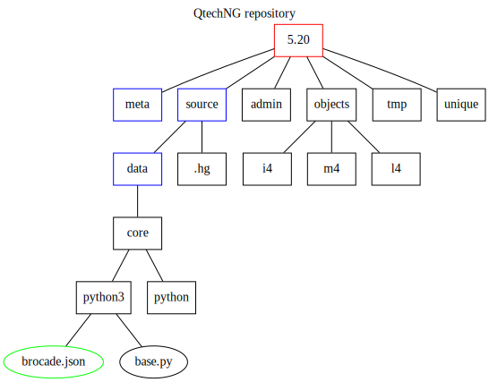

Interludium: Graphiz & Dot
In de vorige blog post toonde ik een SVG.
Ik was eerst van plan deze met Inkscape aan te maken maar de goesting ging snel over. SVG is een XML toepassing en dat met de hand schrijven leek me nog minder appetijtelijk.
Ik herinnerde me dat het in Sphinx, ons documentatie platform, mogelijk is om grafen in te bedden en besloot om de technologie daarachter, eens van nabij te bekijken.
Sphinx maakt gebruik van Graphviz. In Graphviz wordt een graf rigoureus beschreven en dan met behulp van gespecialiseerde software, omgevormd naar diverse formaten: PDF, PNG, … en SVG.
De specificatie van een graf gebeurt met DOT. Dit is een gespecialiseerde taal waarmee men de knopen en takken en hun samengang, zorgvuldig kan beschrijven.
Ik geef meteen het voorbeeld wat ik in de vorige blog post heb gemaakt.
cat repo.dot # Toon de inhoud van de graf specificatie in dot
digraph "QtechNG repository" {
/* paper size in inches */
size="11.0,8.5";
/* locate label at top of drawing */
labelloc=t;
label="QtechNG repository";
/* no directional arrow on connectors */
edge [dir=none];
/* nodes below are boxes (folders) */
node [shape=box;color=red];
version [label="5.20"];
node [shape=box;color=blue];
meta [label="meta"];
source [label="source"];
data [label="data"];
node [shape=box;color=black];
admin [label="admin"];
objects [label="objects"];
i4 [label="i4"];
m4 [label="m4"];
l4 [label="l4"];
hg [label=".hg"];
python3 [label="python3"];
python [label="python"];
core [label="core"];
tmp [label="tmp"];
unique [label="unique"];
/* nodes below are ellipses (files) */
node [shape=ellipse;color=green];
bjson [label="brocade.json"];
node [shape=ellipse;color=black];
basepy [label="base.py"];
/* parent -> child, to draw the tree */
version -> admin;
version -> meta;
version -> objects;
version -> source;
version -> tmp;
version -> unique;
objects -> i4;
objects -> l4;
objects -> m4;
source -> data;
source -> hg;
data -> core;
core -> python3;
core -> python;
python3 -> bjson;
python3 -> basepy;
}
dot -Tsvg repo.dot -o repo.svg # Maak een SVG aan
repo.svg ziet er uit als volgt:

SVG kan een belangrijke plaats innemen in Brocade. Vooral Alain is de kampioen van deze technologie: het gebruik van SVG in bijvoorbeeld statistieken, opent immers heel wat mogelijkheden.
Het is te omslachtig om SVG met behulp van Python te genereren. Er bestaat echter een library voor Graphviz in Python.
Aanmaken van SVG’s - via DOT - wordt hiermee een koud kunstje.